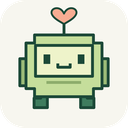

Your buddy is here! 👋
Pixel Buddy keeps you company in your tabs and reminds you to take breaks, drink water and rest your eyes. Here's how it works in under a minute.
- Open any websiteThe buddy sits in the bottom-right corner of your tabs. It can't appear on browser pages like this one, the new tab page or the Chrome Web Store.
- Pin it to your toolbarClick the puzzle piece 🧩 next to the address bar, then the pin. The icon shows minutes until your next break, and its menu lets you log a glass of water or hide the buddy.
- Click the buddyIt says something nice. The ⚙ next to it opens settings: timer lengths, your name, water goal and avatar. Drag the buddy anywhere you like.
- Take the break when it asksEvery 55 minutes (you can change it) the buddy suggests a short break and leads a quick stretch, eye or breathing routine. Snooze or skip if you're busy.
- It notices when you're away or on a callStepping away for 5 minutes counts as a break, and reminders wait while a tab is on a Meet, Zoom or Teams call. Both are in settings.
🎁 During festivals the buddy dresses up. Take 3 breaks during a festival to keep that buddy for good.
🔒 Everything stays in your browser: no account, no tracking. Privacy policy